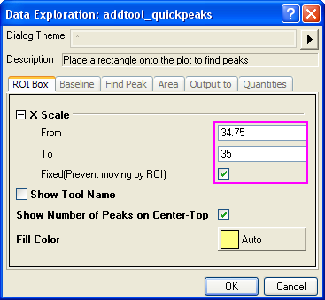
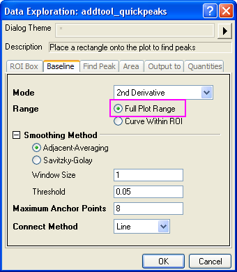
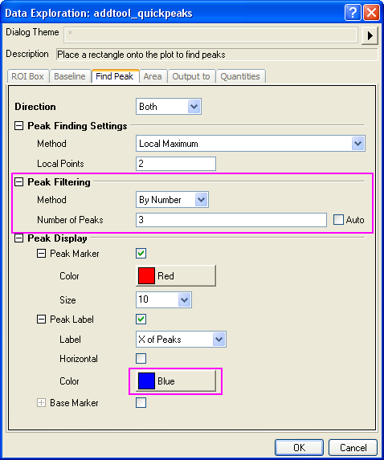
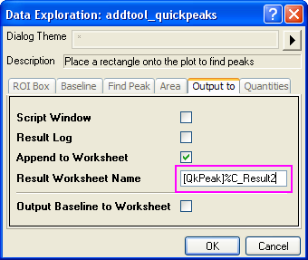
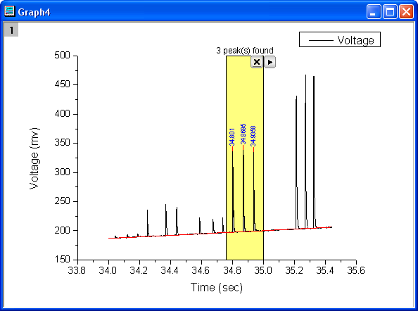
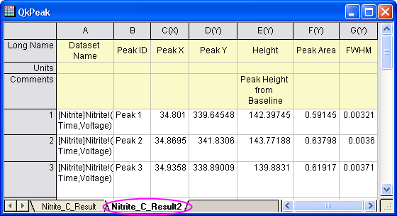
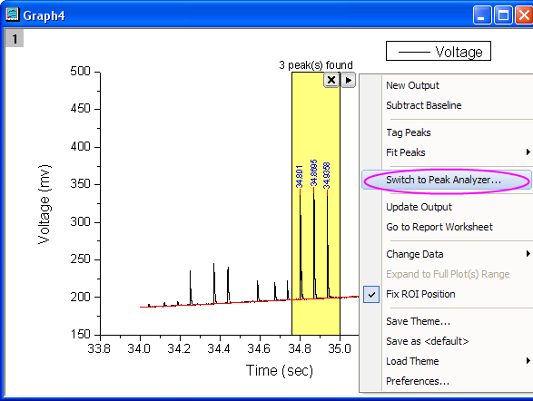
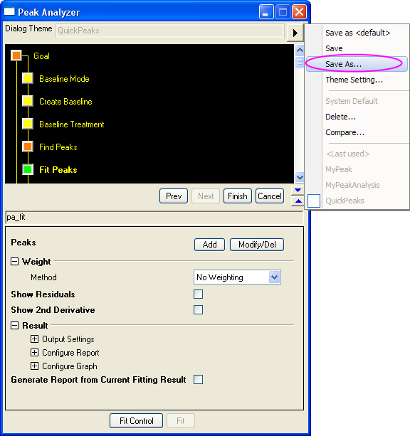

Kombinieren des Minitools Impulsanalyse mit dem Peakanalysator
Zusammenfassung
Das Minitool Impulsanalyse bietet eine intuitive Methode, um eine Peakanalyse durchzuführen. Der Peakanalysator enthält weitere Optionen zum Suchen, Anpassen etc. dieser Peaks. Sie können zuerst das Minitool Impulsanalyse verwenden, um Peaks zu suchen, und dann den Peakanalysator für deren Analyse nutzen. Sie können die gesamte Analyse im Peakanalysator als Design für die wiederholte Nutzung und/oder Stapelverarbeitung speichern.
Origin-Version mind. erforderlich: 9.0 SR0
Was Sie lernen werden
Dieses Tutorial zeigt Ihnen, wie Sie:
- das Minitool Impulsanalyse zum Suchen von Peaks einsetzen.
- den Peakanalysator vom Minitool Impulsanalyse aus öffnen.
- die mit dem Minitool Impulsanalyse gefundenen Peaks mit dem Peakanalysator weiterführend analysieren.
Schritte
- Wählen Sie Datei: Sample-Projekt öffnen: Analysis, um das Sample-Projekt Analysis.opj zu öffnen. Durchsuchen Sie im Projekt Explorer den Ordner Quick Peaks Gadget im Ordner Analysis.
- Markieren Sie alle Spalten im Arbeitsblatt Nitrate und klicken Sie auf die Schaltfläche
 auf der Symbolleiste 2D-Grafiken, um ein Liniendiagramm zu erzeugen.
auf der Symbolleiste 2D-Grafiken, um ein Liniendiagramm zu erzeugen.
- Aktivieren Sie das erzeugte Diagrammfenster und wählen Sie Minitools: Impulsanalyse.
- Ändern Sie auf der Registerkarte Grafische Datenauswahl die Werte bei Von und Bis der X-Skala in 34,75 bzw. 35 und aktivieren Sie das Kontrollkästchen Festgelegt (Verschieben durch graf. Datenauswahl nicht möglich).
- 
- Wählen Sie auf der Registerkarte Basislinie die Option Bereich des gesamten Diagramms für Bereich.
- 
- Ändern Sie auf der Registerkarte Impuls suchen die Methode für Impuslfilterung in Nach Anzahl und setzen Sie die Anzahl der Impulse auf 3. Wählen Sie Blau als Farbe für die Impulsbeschriftung aus.
- 
- Ändern Sie auf der Registerkarte Ausgabe in den Ergebnisblattnamen in [QkPeak]%C_Result2.
- 
- Auf der Registerkarte Eigenschaften können Sie entscheiden, welche Eigenschaften ausgegeben werden sollen. Lassen Sie nur die Kontrollkästchen Datensatzname, Impuls-ID, Impuls X, Impuls Y, Höhe, Impulsbereich und Halbwertsbreite aktiviert und deaktivieren Sie alle anderen Kontrollkästchen. Klicken Sie auf OK, um das Minitool zu der Zeichnung hinzuzufügen.
- 
- Klicken Sie auf die dreieckige Schaltfläche rechts von der grafischen Datenauswahl und wählen Sie Neue Ausgabe, um das Berichtsblatt zu erzeugen.
- Rufen Sie das Kontextmenü erneut auf und wählen Sie Zum Berichtsblatt gehen, um das Ergebnisblatt zu öffnen.
- 
- Jetzt wird der Peakananalysator geöffnet, um die Impulsanpassung auszuführen. Rufen Sie das Kontextmenü auf und wählen Sie Zum Impulsanalysator wechseln.
- 
- Der Peakanalysator wird geöffnet. Das Ziel Impulse anpassen ist bereits ausgewählt, der Modus der Basislinie und die Methode zur Impulssuche folgen den Einstellungen des Minitools Impulsanalyse.
- Gehen Sie direkt zur Seite Impulse fitten und klicken Sie auf die Schaltfläche Fit, um die drei gefundenen Impulse mit der Standardfunktion Gaussian anzupassen.
- Klicken Sie auf die Schaltfläche
 und wählen Sie im Kontextmenü Speichern unter, um diese Analyse als ein Design mit dem Namen MyQuickPeaks zu speichern.
und wählen Sie im Kontextmenü Speichern unter, um diese Analyse als ein Design mit dem Namen MyQuickPeaks zu speichern.
- 
- Klicken Sie im Peakanalysator auf die Schaltfläche Fertig, um die Anpassungsergebnisse der Impulse zu erzeugen.
| Hinweise: Das Design kann in der Impulsanalyse mit Stapelverarbeitung verwendet werden. Wählen Sie Analyse: Impulse und Basislinie: Impulsanalyse durch Stapelverarbeitung mit Design, um den Dialog paMultiY zu öffnen. Die Impulsanalyse mit Stapelverarbeitung ist sehr nützlich, wenn Sie mehrere Datendateien haben, die sich sehr ähnlich sind. Weitere Einzelheiten finden Sie in diesem Beispiel. |